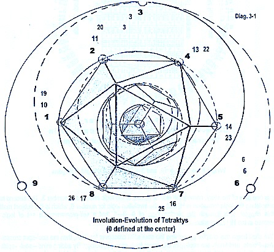

Repeatability in Quantum Technology
Holons of Creation → Self-Programming in the Vacuum Computer between Logic H(172) and Information H(172) in Natural Creation
Mind-Spirit Actions
{kind=link}
Mind-Spirit Action in forming the Bio-Molecular Logic H(172):
- Lock Logic → Pre-Haven Octagon Trigram Logic
Lock-Key Logic → Thought Octagon Bigrm Logic
Mind-Soul Action in forming the Bio-Molecular Information H(172)
- Key Logic → Post-Heaven Octagon Trigram Logic
Key-Lock Logic → Thought Octagon Bigram Logic
Mind -> Soul-Spirit Communication: The Tetraktys

{kind=link}
Key finding Lock and Opening it
-
- Tetraktys → Involution-Evolution between Logic-Information H(172)s
Lock-Key Formation → Bio-Molecular Hexagram, Information-Energy Structure- Information-Energy → Free Energy, Energy-Mass (structure formed from condensed energy)
Monopoles → Dipole, Superconductivity in formation of Atomic-Molecules
Key Finding Lock
Opening (Outputs)
This is Creation with involution logic as the Mind.
Notice the lock-key formation between the 81-tetragram table and the 64-hexagram table binds Matter-Being logic together with the fine structure constant as shown below.
- 81 ←→ 9 → 27 ←→fine structure constant←→ 37 ← 1 ←→ 64
Thus, Creation, with self-programming vacuum computer’s lock-key logic, binds Matter-Being together via the fine structure constant.
Creation, as described above follows the natural process of involution-evolution. This process generates entropy, the logic difference between involution and evolution. This state of entropy is from a non-local/local free will field of uncontrolled-unknown monopoles (or information-entropy potentials of line-diagram logic). This process is started from the logic-information vacuum with a particular set of involution logic. Quantum technology is the reverse operation of this process, using the observer’s mind to start the creation (or co-creation) from outside of the vacuum in the three dimensional world.
CREATION WITH QUANTUM TECHNOLOGY VIA OBSERVER’S INTENTION
Hypotheses
- (1) the logic of the experiment must be self-consistent in the experimenter’s intention, in addition,
(2) this logic must include the logic of breaking the 3-D space via electron tunneling and
(3) into H(172) with nuclear tunneling,
(4) the experiment itself must learn its experimenter’s intention, which implies that this intention is self-programmed in the hexagram logic and encoded inside God’s Vacuum Computer, and
(5) the experiment must be performed inside a bio-quantum Faraday Cage for shielding unwanted information-entropy.
{kind=link}
- Shielding of Unwanted Free Will/Entropy
Low-Energy Transmutation
Presented in this section are data supporting this bio-atomic model, at least showing that this model is heading in the correct direction. The above two diagrams show that low-energy transmutation is possible. In addition, illustrated in this website, Transmutation—Fee Energy—Superconductivity behaves as a Holon in such a way that there is one single explanation for all three activities. That is to say, all three activities make use of the tunneling property of one or more of 27 isotope-elements, in combination with other non-isotope elements or by itself.
These two tables contain the record of some of the major experiments conducted from 1990 to 1995. The total number of experiments performed over this period approaches two thousand. (Experiments designed and performed by Gary Kissler). There are two interesting data points shown in this table. These two points are
- (1) The repeatability of most of these information-energy transmutations has an experimental success percentage of 75% or higher. The success percentage of transmuting Boron/Copper to a 10% yield of Silicon is 90% repeatable.
(2) The 4.34% yield in Tungsten transmuting from Nickel/Aluminum/Oxygen with an experimental success percentage of 75% is commercially important. This is also true for the transmutation of Palladium from Nickel /Aluminum with a yield of 1,200 parts per million.
{kind=link}
{kind=link}
In reviewing these tables, one must also take into consideration that these experiments were performed in an unequipped laboratory. That is to say, they were performed without equipment for precise quantitative measurements, environmental control, and professional assistance. In short, these experiments were performed in a garage-type of setting.
NO SHIELDING WAS USED IN THESE EXPERIMENTS and at that time shielding was not known to be a necessary condition. In fact, this concept of shielding the unwanted monopole was not at all in our thinking.
This self-programming ability to convert intention onto line diagram logic of pairs of lock-key trigrams is embedded in the First Cause, while the involution-evolution creations are in the Second Cause.
{kind=link}
First and Second Cause in Symmetry Break of Number 9 Logic and Topology/Gnomonic expansion-contraction of Information
First Cause → Creation of the Computer and the Formation of
- Being Logic ← Computer → Matter Logic
Spirit ← Computer Modules → Logic
Soul ← Computer Executions → Bio-Quantum
Observer’s Actions
- Mind → Reading of Computer Code ← Brain-Spirit Interaction
Mind → Executing Computer Code ← Brain-Soul Interaction
Second Cause → Creation of Space and the 3-D Universe
- Body-Brain ← Computer Outputs → Particle
Gnomonic → Inflationary Universe
Computer/Aether Physics
- Logic Vacuum ←→ Logic Potentials → Program Modules ← Monopoles
Information Vacuum ←→ Information Potentials → Program Execution ← Magnetic Monopoles
{kind=link}
-
- Dark Matter -> Information Potentials (Magnetic Monopoles)
Dark Energy -> Logic Potentials
BEING: the Invisible Universe at the top of the diagram
MATTER: the Visible Universe at the bottom of the diagram
(bottom from Seth Lloyd, Programming the Universe)
Dimensional Comparison between Today’s Computer and the Vacuum Computer
Today’s Computer in 5-D + Free Will
-
- 3-D in x, y, z
- 2-D binary, 0 or 1
(a) Space
(b) Computer Logic
(b) Free will, 1-D (Programmer)
God’s Vacuum Computer in 10-D + Free Will
-
- Pre-Octagon
Post-Octagon
Thought-Octagon- Binary, 0, 1
Bigram
Trigram
Tetragram
Pentagram
Hexagram
(a) 3-Sets of Information Coordinates
(b) 7-D Computer Logic
(c) Free Will, 1-D, (Neutral Lines <–> Photons <- 3-6-9)
Mind-Soul-Spirit in Involution Logic of Numbers
{kind=link}
[1, 2, 4, 8, 7, 5], [64->1, 128->2, 256->4, 512->8, 1024->7, 2048->5]… is known as the music of the sphere together with 3-6-9 and the Tetraktys, as shown in the above diagram, they formed the involution-evolution vortexes in a nano-tube.
The Music of the Sphere Cycle
{kind=link}
Applying these two series to model the DNA, we have
{kind=link}
This dimensional comparison illustrates the power and flexibility of the vacuum computer in comparison to today’s computer technology. Notice, there is a direct correlation between dimensions and the power-flexibility of the computer’s encoding software. Thus, the ability of God’s Vacuum Computer to translate the observer’s intention into line diagram codes is not at all impossible, especially since the observer’s intention is a form of Being-Logic that is bound together with Matter-Logic. Even in today’s computer technology, many different categories of language softwares exist, i.e.: Language learning software, Translation software, Dictionary software or Grammar software, just to name a few. In addition there are Language translation programs that not only translate and transform your written words into other languages, but also help you to find appropriate words and synonyms.
(This page continues in Repeatability and Deterministic Quantum, under construction)